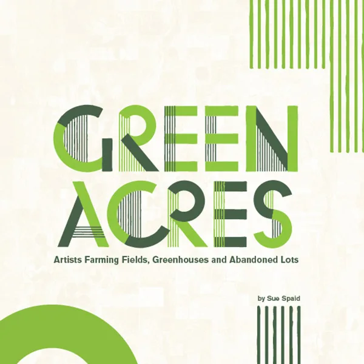
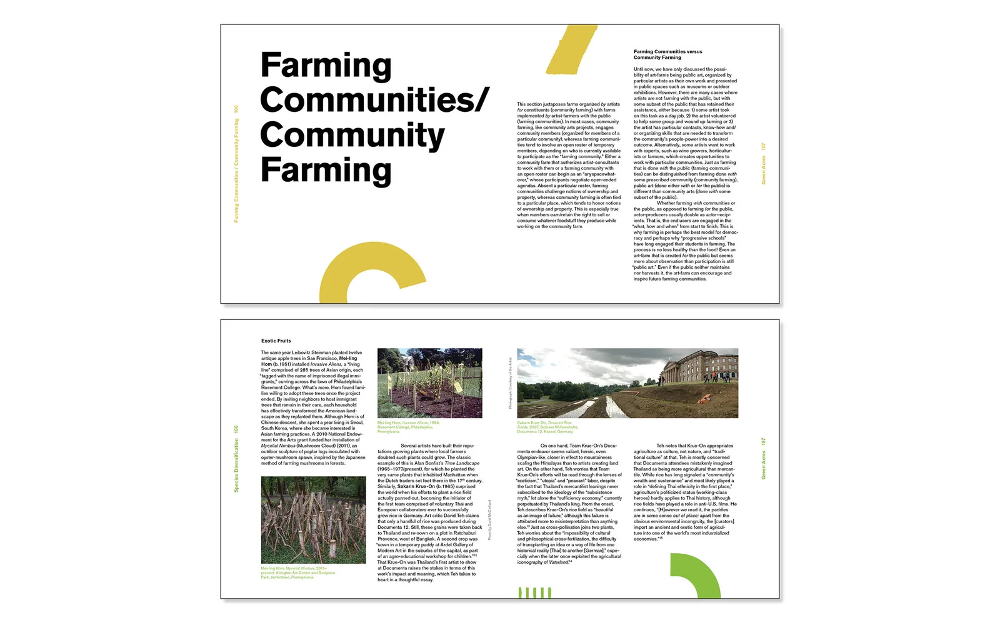
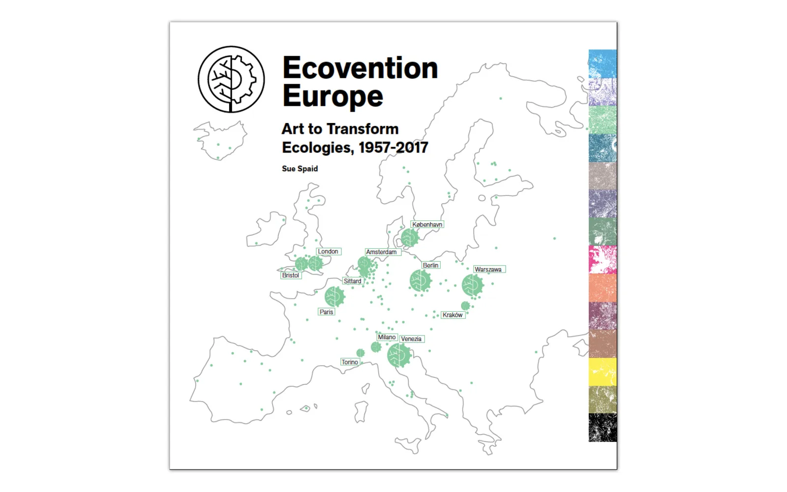
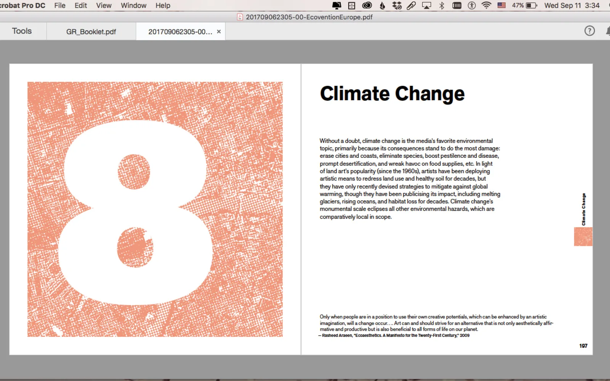
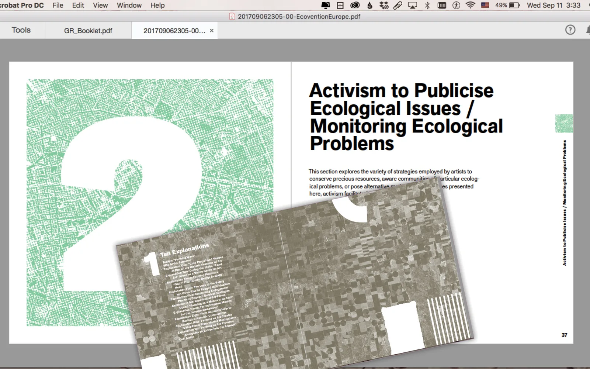
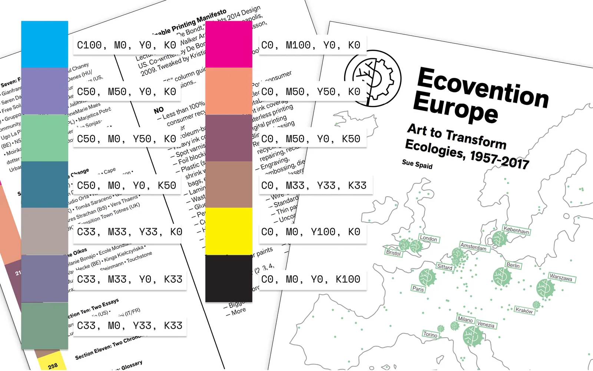

Green Acres is the catalog for an exhibition of the same name, designed with curator Sue Spaid. The show gathered artists who use farming itself as an art practice — small, ad hoc, spontaneous work: plantings in ditches, hillsides, city medians. The book set that work against an invisible grid: the agricultural grid of industrial-scale U.S. farming, the perfect townships and crop-watering circles you see flying over the Midwest. Logotype elements drawn for the project puncture and break that grid throughout the book, echoing how the artists' own work breaks from big agriculture’s order.

- Green Acres
- Same form as a typical gallery catalog — sustainability lived in the production: printed on demand, on 100% recycled paper.
- Ecovention Europe
- Same design system reused rather than redrawn, a stricter ink-coverage rule, and printing moved closer to the venue.
What made Green Acres more sustainable
The book’s form didn’t change — it still uses the tropes of a modernist gallery catalog. What changed was the printing: printed on demand, on 100% recycled paper. It was a book trying to be less bad, not a reinvention of what a catalog could be.

The sequel: Ecovention Europe
When Sue Spaid asked me to collaborate again on the catalog for the exhibition’s European sequel, Ecovention Europe, I’d just come across a lecture by designer Sara de Bondt on building a manifesto of sustainable design practices for a project at the Barbican. I used her thinking to interrogate the design Green Acres had already established, rather than start over.

Reusing the constraints
Reusing the Green Acres template meant less energy spent designing the book twice. From there, we reconsidered how the pages used white space: maximizing text on every page, no more of the superfluous blank space Green Acres left behind. We also decided that images shouldn’t bleed where it can be avoided. The grid, typefaces, and column structure carried over almost unchanged from Green Acres; everything was just made to fit more tightly and completely, so a book with far more content ended up only a bit longer than its predecessor. The instinct to just do less rather than redesign from scratch traces back to The Sustainabilitist Principles.


A stricter color rule
The color palette differentiates the book’s sections under one constraint: no color mixes to more than 100% ink coverage. Black is 100% black, full stop — not the richer "rich black" you get from mixing cyan, magenta, and yellow into it, the way most catalogs do. Every other color in the palette is a CMYK mix that adds up to 100% or less. The constraint produces a set of tones that don’t behave like a typical palette, but hang together as one. No one chose these colors for how they look together; the ink-coverage rule chose them.

Printed closer to home
Ecovention Europe was printed on demand by a European printer, chosen specifically to cut the transportation distance to the exhibition’s venue in the Netherlands.